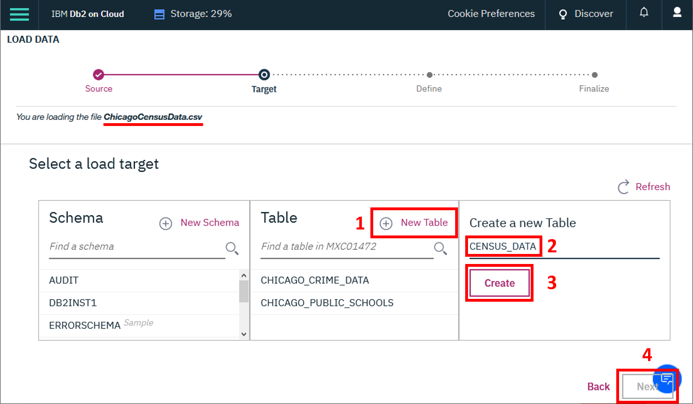

Estimated time needed: 30 minutes
After completing this lab, you will be able to:
Determine the correct type of join to use for a given problem.
Write and execute joins to query data from multiple tables.
In this hands-on lab, you will work with three datasets that are available on the City of Chicago's Data Portal:
You must download each dataset, create a table for each one, and load the appropiate dataset through the Db2 console. You should not reuse similar tables with other names from other exercises or labs, as they may not create the correct results.
Important note:
If you have not yet downloaded the three datasets from the City of Chicago's Data Portal, created the required tables, and loaded the data, please follow the instructions in this section.
This dataset contains a selection of six socioeconomic indicators of public health significance and a “hardship index,” for each Chicago community area, for the years 2008 – 2012. A detailed description of this dataset and the original dataset can be obtained from the Chicago Data Portal at: https://data.cityofchicago.org/Health-Human-Services/Census-Data-Selected-socioeconomic-indicators-in-C/kn9c-c2s2
This dataset shows all school level performance data used to create CPS School Report Cards for the 2011-2012 school year. A detailed description of this dataset and the original dataset can be obtained from the Chicago Data Portal at: https://data.cityofchicago.org/Education/Chicago-Public-Schools-Progress-Report-Cards-2011-/9xs2-f89t
This dataset reflects reported incidents of crime (with the exception of murders where data exists for each victim) that occurred in the City of Chicago from 2001 to present, minus the most recent seven days. A detailed description of this dataset and the original dataset can be obtained from the Chicago Data Portal at: https://data.cityofchicago.org/Public-Safety/Crimes-2001-to-present/ijzp-q8t2
The lab requires you to have these three tables populated with a subset of the whole datasets. Download the 'ChicagoCensusData.csv', 'ChicagoPublicSchools.csv', and 'ChicagoCrimeData.csv' datasets below and load the data into your Db2 On Cloud database.
You need to create a new table for each dataset. As you load each dataset, click on "(+) New Table", specify the name of the table you want to create, and then click "Next".
Name the new tables as follows:
After you have created the tables, review the data in each table by using the View Data feature in the Db2 On Cloud console.
When you have confirmed that the three datasets are loaded into the CENSUS_DATA, CHICAGO_PUBLIC_SCHOOLS, and CHICAGO_CRIME_DATA tables, you can proceed. Write and execute SQL queries to solve the problems below.
Copyright © 2020 IBM Corporation. All rights reserved.
| Date | Version | Changed by | Change Description |
|---|---|---|---|
| 2021-01-29 | 1.2 | Rav Ahuja | Fixed license statement |
| 2021-01-28 | 1.1 | Rose Malcolm | Converted to markdown. Added instructions to skip table setup if done in previous lab. |
| 2020-11-25 | 1.0 | Ramesh Sannareddy | New lab created |